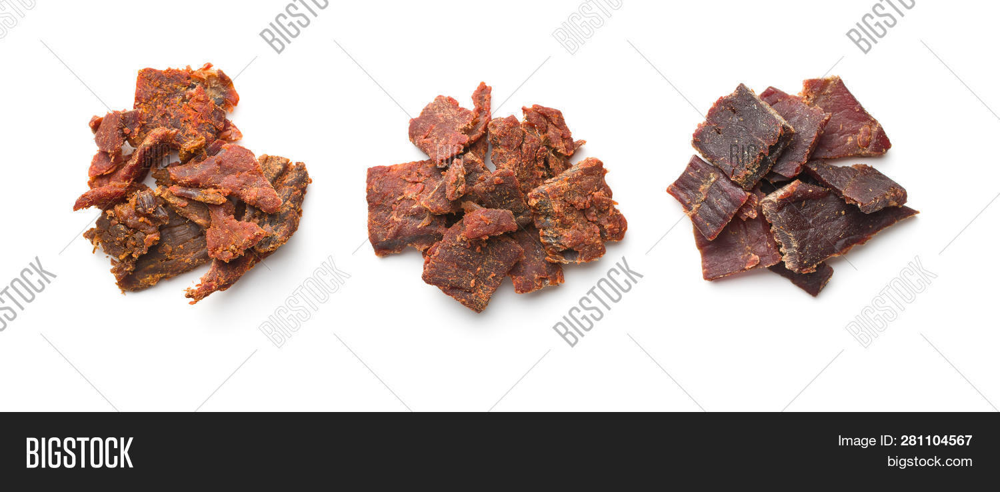

BLTG, the Eternal meat

First, you must find meat. Any meat. Deer, boar even rabbit. Refrain from using the flesh of your enemy if you have a choice.
He will speak ill of you in the other world, even if you don't hear this voice.
The ingredients
Steps
- Slice the meat. the thinner it is, the fastest it will be ready
- Soak it in the vinegar, add sweet berries and everything that can enhance the taste of the meat
- Let it rest fort a day
- Hang it, outside of animals reach. The place must be not too warm, not too cold
- After three days observe it, you will know how you like it
Back to the Book